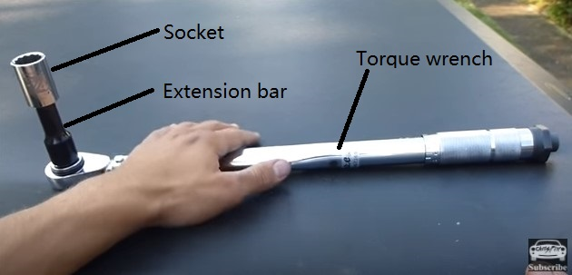

Tools needed
1. Scissor Jack

Purchase link: 2 Ton Scissor Jack @princessauto
Important parameters: 2 Ton.Most cars and SUVs weigh between 1-2 tons.
Note: This jack has a simple structure, light weight and low price. It also can be placed on the car and used for replacement of spare tires.
2. Torque wrench

Purchase link: 1/2 in. dr Click-Type Torque Wrench @princessauto
Important parameters: Torque Range: 20 to 150 ft-lb. Most cars and SUVs nuts need 80-110 ft-lb torque.
Note: A torque wrench can tighten the tire nuts while avoiding deformation of the hubs or damage the nuts due to excessive force.
A torque wrench only uses for tightening tire nuts, you need another wrench for loosening the tire nuts.
You need to buy a nut socket and an extension bar which fit for the dimension of this torque wrench and your tire nuts. Or you can just buy a deep socket.
Reference pictures:
Socket

Extension bar

Deep Socket